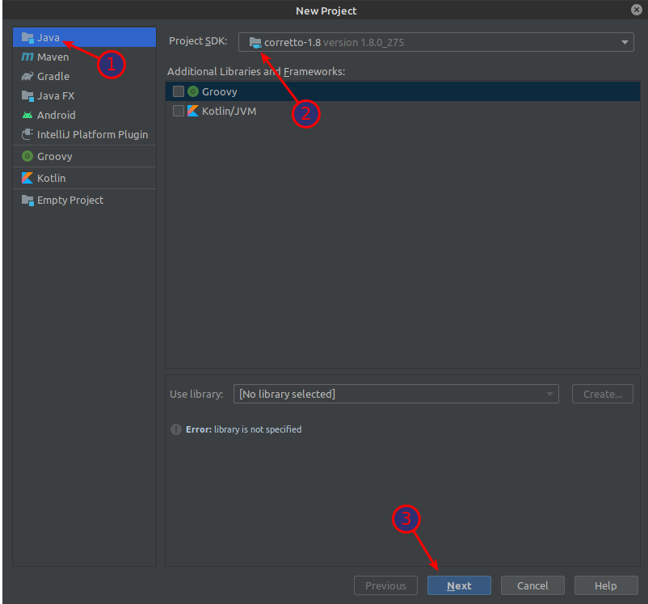
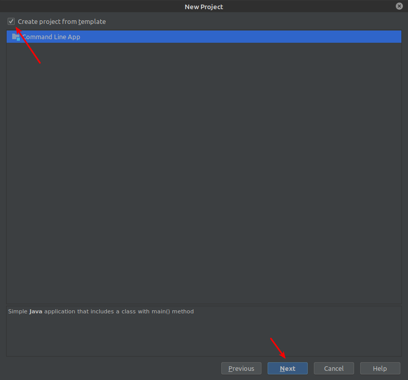
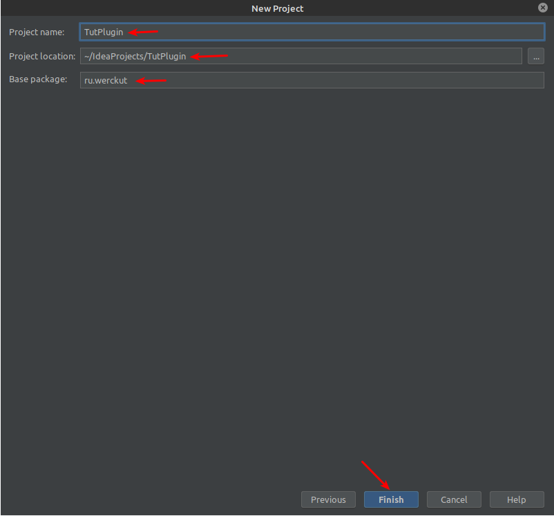
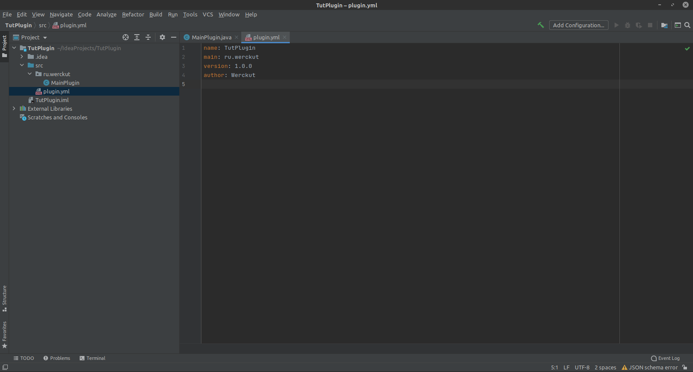
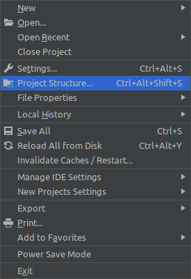
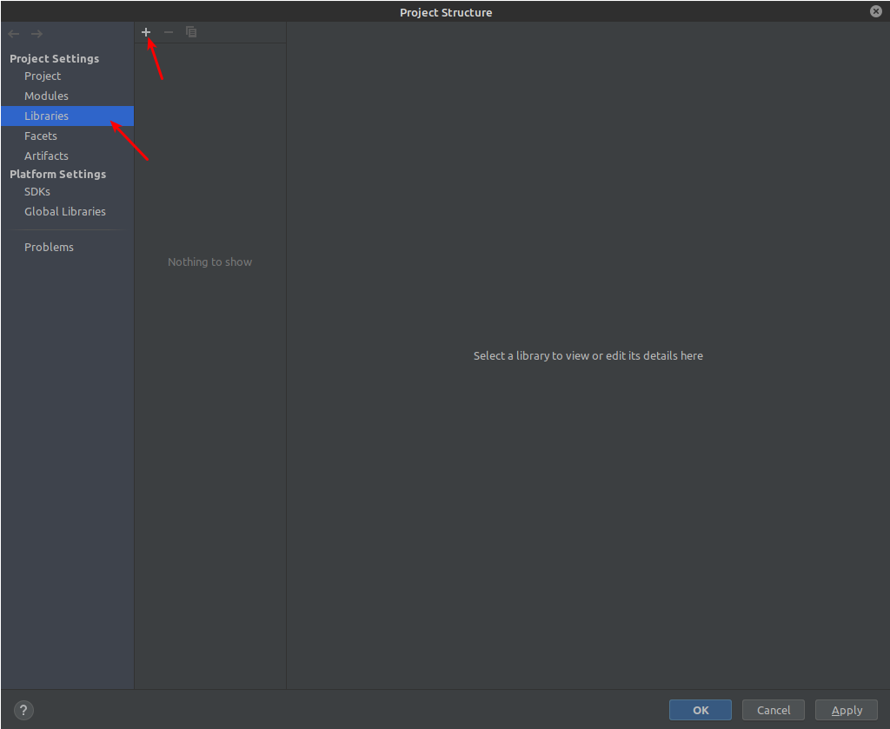
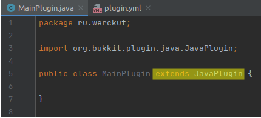

Добро пожаловать в руководство
Если вы хотите подержать автора, вам сюда > клик
Если вы хотите помочь в написании статей, или задать вопрос, вам сюда > клик
Подробное руководство по созданию spigot/bukkit minecft плагина.
Руководство даст базу необходимую для создания своего minecraft плагина.
Подготовка
Выбор IDE
| IDE | Доступность | Обучение |
|---|---|---|
| Eclipce | Бесплатная | Большенство видео на YouTube |
| NetBeance | Бесплатная | Редко видел (но не сильно труднее Eclipce) |
| Intellij IDEA | Бесплатная (урезанная) |
Мало, но набирает популярность |
Очень кратко об IDE
Eclipce - мощная и популярная.
Intellij IDEA - ещё более мощная.
NetBeance - для слабых пк подойдёт, простой интерфейс.
(если у вас есть 8гб озу у вас пойдёт любая ide + minecraft).
Все ide ± равны, отличия появятся только в глубоком изучении java.
Сейчас вы можете смело выбрать ide “на вид”, не смотрите на возможности, их более чем достаточно для нашего дела.
За всё время я успел поработать в каждой из этих ide, но остановил свой выбор на Intellij IDEA (вообще при выборе ide, первым делом я иду к JetBrains üôÉ)
Это очень мощная ide под java/android, но в платной версии можно ещё и web разработкой заниматься.
Именно в ней я буду показывать как и что делать.
Работа с ядром сервера
Популярные ядра
(Вернее те, что знаю я)
- CraftBukkit [плагины] ссылка
- Spigot [плагины] ссылка
- Sponge [плагины + моды] ссылка
- Thermos [плагины + моды] ссылка - GitHub Page между прочем
Я буду работать на ядре Spigot.
Если не ошибаюсь, Spigor - переписанный Bukkit.
Spigot - Это более производительная платформа для bukkit, со многими улучшениями, вот некоторые из них:
- Оптимизированы события роста, подсчет чанков
- Автоматическое собирание шаров опыта и предметов в стаки.
- Выключено случайное обновление света
- Возможность создать свое сообщение, при отказе в вайтлисте
- Возможность конфигурировать записываемые события в лог
- Свое сообщение при выключении сервера
- Команда перезагрузки
- Автоматическое обновление
Создание сервера
Скачайте нужное вам ядро. P.S - они были тут.
Напомню, что я выбрал Spigor-1.16.4.Для удобства создадим папку для сервера и перенесём туда наше ядро.
-
Создадим запускной файл
Для windows "<название>.bat>, для linux “<название>.sh”.
У меня linux и файл будет называть “start.sh”, на windows может называться “start.bat”.
В файл вставляем следующее:
java -Xmx1024M -Xms1024M -jar <название ядра>.jar nogui
-Xmx/Xms - максимальное и минимальное выделение оперативной памяти для сервера.
Можете убрать nogui и посмотреть, что будет.(выйдет приложение)
В моём случае файл выглядит так:
java -Xmx1024M -Xms1024M -jar spigot-1.16.4.jar nogui
- Запускаем наш .bat или .sh файл.
- После загрузки появиться файл eula.txt
это соглашение. Просто заходим в него и заменяем
eula=falseнаeula=true - Снова запускаем .bat/.sh файл
- После окончания загрузки ваш сервер готов к работе.
Чтобы на него зайти используйте localhost:25565.
Если вы на пиратской версии майнкрафта выключите online-mod!!!
Настройка server.proparties
enable-command-block=false // если знаете, что такое КБ ставим true)).
level-name=world // название мира (не сервера).
motd=A Minecraft Server // описание сервера в меню серверов,можно '§'.
pvp=true
generate-structures=true // можно отключить, чтобы лишник раз не генерировать структуры.
online-mode=true // !!! если вы хотите, чтобы пиратские аккаунты могли заходить на ваш сервер - ставим false !!!
server-ip= // по умолчанию localhost
allow-nether=true // можно выключить, чтобы не создавать незер.
server-port=25565 // оставляем
Начало создания плагина
Создание проекта
Создадим основу для создания плагина
Напишем первый консольный плагин
- Зайдём в нашу ide (у меня Intellij IDEA).
- Создадим новый java проект.
- File > New > Project…

- Выберем Java.
- Тут нам нужно выбрать JDK java-1.8
Если у вас нет jdk 1.8 в выпадающем меню “Project SDK” выберите “Download JDK…”, версию ставим 1.8.

жмём next
- Желательно поставить галочку.

жмём next
- Зададим имя проекту. (у меня TutPlugin).
Выберете удобную вам папку для проекта.
Если вы ставили галочку, пропишем пакеты, по типу:
<домен>.<ник/компания>- это лишь пример, по факту во 2-ую <> вы можете поставить что угодно.
Если не поставили, жмём “Previous” и ставим галочку :D.
<домен> - обычно ставят com, но я иду против систем и пишу ru.
<ник> - теперь вы знаете мой ник.

жмём finish
Осталось немного.
Если вы не ставили галочку:
В src - new > Package : Название - “<домен>.<название>”.
- В созданном пакете, создадим Main класс.
Клик по пакету new > Java Class
Название любое. (у меня MainPlugin) - В src создадим “plugin.yml”
приятно, чтобы в плагине стоял ты в авторах
author: Werckut # все же должны знать кто создал сие чудо
Результат

И ещё чутка
Импорт библиотек bukkit
"File > Project Structure…"

"Libraries" жмём "+"

Выбираем из выпадающего меню "Java"

Дальше нам нужно унаследовать Main класс от JavaPlugin
MainPlugin.java
extends JavaPlugin
